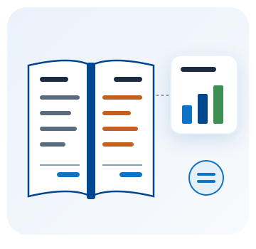

Sistema Contable
Tu contabilidad al día con lo que ya facturas: los asientos salen solos de tus ventas y de tus compras.

La contabilidad que ya empieza hecha
Cada factura que emites, cada compra que registras y cada retención que haces entran solas a los libros, en la cuenta que tú configuraste. Lo que no sale de un comprobante —un préstamo, el pago al IESS, una factura en papel— lo registras una vez y también queda con su asiento. Y al cerrar el mes, los cuadres te dicen si la contabilidad coincide con tu inventario, con lo que te deben y con lo que debes.
Se suma a tu facturación: la contabilidad se contrata aparte, sobre tu plan de facturación electrónica, porque los asientos salen de los comprobantes que emites y recibes.
Todo esto, en un solo plan
- Plan de cuentas basado en el de la Superintendencia de Compañías, o el tuyo importado
- Asientos automáticos de ventas, compras, retenciones e inventario
- Libro diario, mayor y balance de comprobación
- Estados de situación financiera, de resultados, de flujo de efectivo y de cambios en el patrimonio
- Cuentas por cobrar y por pagar, con cobros, pagos, antigüedad y estado de cuenta
- Cuentas bancarias y cajas, con conciliación contra el extracto
- Cierre de cada mes y del ejercicio
- El ATS de cada mes, en el formato del SRI
- Libros y estados en PDF y en hoja de cálculo
- Acceso desde computadora, tablet o celular
¿Por qué llevarla con SysDevUp?
Sale de tus comprobantes
Las ventas, las compras y las retenciones se contabilizan solas, sin volver a digitarlas.
Cuadra contra todo
El inventario, lo que te deben y lo que debes, comparados con los libros documento por documento.
Con el ATS
Cada mes ves qué le falta a cada compra antes de generar el anexo, no después.
Con acompañamiento
Cuenta con soporte para configurar tus cuentas y arrancar con tus saldos iniciales bien cargados.
Plan de contabilidad
Un solo plan, con todas las funciones y una vigencia de 12 meses. No tiene límites propios: lo que contabilizas depende de los comprobantes de tu plan de facturación.
Contabilidad
Para empresas obligadas a llevar contabilidad
$199 /año
Se suma a cualquier plan de facturación
- Plan de cuentas, asientos, libros y estados financieros
- Cartera de clientes y proveedores
- Bancos, cajas y conciliación bancaria
- Cierre de meses y del ejercicio
- El ATS de cada mes
- Sin límite propio de asientos ni de cuentas
¿Ya llevas tu contabilidad en otro sistema? Escríbenos por WhatsApp: te ayudamos a cargar tu plan de cuentas y tus saldos iniciales para empezar desde el mes que elijas.
Preguntas frecuentes sobre el sistema contable
¿Necesito facturar con ustedes?
Sí. La contabilidad se suma a tu plan de facturación electrónica, porque los asientos automáticos salen de las facturas que emites y de las compras que registras en el sistema.
¿Para quién es?
Para empresas y personas obligadas a llevar contabilidad. Si eres RIMPE o no estás obligado, tu plan de facturación ya trae el libro de ingresos y gastos, sin costo adicional.
¿Puedo usar mi propio plan de cuentas?
Sí. Puedes importarlo desde un archivo, o empezar con el que trae el sistema, basado en el de la Superintendencia de Compañías, y adaptarlo: cambiar nombres, agregar subcuentas y desactivar las que no uses.
¿Y lo que no tiene comprobante electrónico?
Una factura en papel, un préstamo o el pago al IESS los registras una vez como documento por pagar o por cobrar, y quedan con su asiento y en tu cartera. Lo demás se carga como asiento manual.
¿Genera el ATS?
Sí. Cada mes te muestra las compras que reporta y lo que le falta a cada una, y genera el archivo comprimido en el formato del SRI.
¿Qué no incluye?
Nómina ni activos fijos. Los sueldos se registran como documento por pagar o asiento manual, y la depreciación de cada mes, como asiento manual.